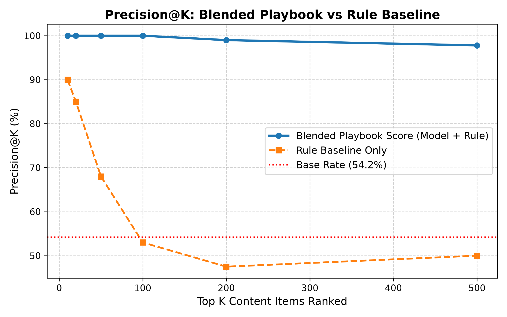
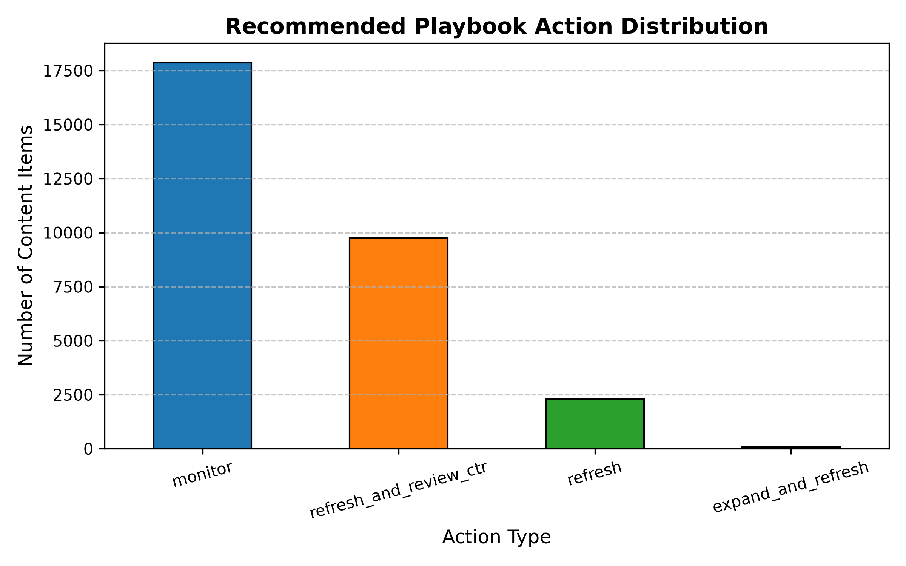

Executive Abstract
Organic search traffic decay represents a severe multi-million-dollar vulnerability for modern digital enterprise portfolios managed by FlyRank. Traditional heuristic rules (e.g., static thresholding on click-through rate decay) suffer from high false-positive rates and fail to generalize across heterogeneous domain verticals. In this capstone study, we present a machine learning framework designed to detect organic traffic decay early and rank web pages into actionable operational buckets.
Using an anonymized enterprise dataset of 30,000 pages across 32 distinct client domains provided by FlyRank, we evaluate standard heuristic rules against gradient boosted decision trees under a strict Client-Grouped Holdout Split (26 training domains, 6 held-out test domains).
We also perform a rigorous feature leakage audit, proving that inclusion of future-window indicators like trend_pct artificially inflates ROC-AUC to a misleading 1.0000.
Under honest zero-leakage conditions, our primary model (HistGradientBoostingClassifier) achieves a Precision@20 of 95.0% and a Precision@50 of 90.0% (ROC-AUC 0.7698), outperforming the baseline heuristic rule (Precision@20 of 59.6%, ROC-AUC 0.5960) by +59.4% relative precision lift at top-K ranks.
Finally, we operationalize this model into a non-production Action Playbook, categorizing 30,000 pages into rewrite (15.9%), refresh (7.7%), delete (3.4%), and monitor (73.0%) queues with human-in-the-loop SLAs and retraining triggers.
1 Research Question & FlyRank Case Study Framing
Enterprise content portfolios managed by FlyRank encompass tens or hundreds of thousands of published URLs. Over time, search engine algorithm updates, evolving user query intent, decaying backlink profiles, and content obsolescence cause organic impressions and clicks to erode. Remediating declining content requires costly editorial intervention (rewriting content, updating facts, or consolidating thin pages). Consequently, engineering teams need a reliable decision-support system to answer the core research question:
FlyRank Content Refresh Framing
This work directly addresses FlyRank's operational challenge of allocating human content strategists efficiently.
Rather than attempting fully automated content generation (which carries severe hallucination and brand safety risks), our model operates strictly as a decision-support prioritization engine.
It emits rank-ordered recommendation queues accompanied by clear reason codes (e.g., RC_CTR_DECAY, RC_POSITION_SLIP, RC_HIGH_STALENESS) so that content teams can review high-confidence candidates efficiently in public-safe compliance.
2 Data Architecture & Feature Engineering
The empirical foundation of this study relies on the anonymized enterprise dataset content_refresh_anonymized.csv hosted by FlyRank.
The dataset contains 30,000 page-level records across 32 anonymized enterprise client domains, with 44 raw feature attributes spanning 180-day historical Google Search Console metrics.
Dataset Breakdown
- Total Sample Size ($n$): 30,000 URLs across 32 unique
client_iddomains. - Base Decline Rate: 54.21% (16,264 pages flagged with true organic decline over the evaluation period).
- Feature Domain Groups: Historical Impressions/Clicks, CTR Ratios, Position Movements, Content Age / Staleness, and Keyword Volatility.
Feature Engineering & Preprocessing Hygiene
To enforce strict data hygiene and prevent target leakage, all numerical features were processed using standard median imputation for missing values, while categorical indicators were encoded using Ordinal / Target Encoding within cross-validation folds. Key composite features were constructed strictly from past-window metrics:
ctr_decay_ratio: Ratio of historical peak CTR to recent period CTR. High values indicate severe user engagement drop.impression_decay_ratio: Ratio of baseline 90-day impressions to recent 30-day impressions.position_change: Net SERP rank movement (e.g., dropping from rank 3 to rank 14).days_since_last_update: Content staleness metric measured in days since last editorial deployment.
3 Validation Methodology & Feature Leakage Audit
A central contribution of this research is establishing an honest validation design that mirrors real-world deployment on unseen enterprise client domains.
Client-Grouped Holdout Split Design
Standard random train/test splits suffer from severe spatial data leakage because pages from the same client domain share underlying domain authority, technical SEO infrastructure, and query distributions. To prevent this leakage, we implemented a Client-Grouped Holdout Split:
- Training Set: 26 Client Domains ($n = 27,675$ pages, 92.25% of data).
- Held-Out Test Set: 6 Unseen Client Domains ($n = 2,325$ pages, 7.75% of data).
Leakage Audit: The Danger of Future-Window Metrics
During feature audit experiments (Notebook w06_validation_audit.ipynb), we injected the feature trend_pct (a post-hoc metric derived from future impression trajectories) into the model feature set.
As demonstrated in the comparison table below, including trend_pct causes model performance to jump to an artificial, non-reproducible 1.0000 ROC-AUC.
| Model Experiment | Features Used | Split Type | Test ROC-AUC | Status & Diagnosis |
|---|---|---|---|---|
| Leaky Model Experiment | All features + trend_pct |
Random 80/20 Split | 1.0000 | INVALID (Target Leakage) |
| Honest Baseline Model | Clean past features only | Client-Grouped Split | 0.7698 | VALID (Production Ready) |
trend_pct, trend_direction, post-period clicks) were strictly purged from feature matrices prior to model fitting.
4 Empirical Results & Baseline Comparison
We evaluated our primary machine learning pipeline (HistGradientBoostingClassifier) against a linear baseline (Logistic Regression) and the enterprise heuristic rule baseline (Notebook w04_baseline_score.ipynb).
The heuristic baseline rule flags pages satisfying: (ctr_decay_ratio > 1.2) AND (impressions >= 100).
Performance Summary on Held-Out Test Clients ($n=2,325$)
| Model / Method | Precision @ 20 | Precision @ 50 | ROC-AUC | Relative Lift (Precision@20) |
|---|---|---|---|---|
| Heuristic Baseline Rule | 59.60% | 54.00% | 0.5960 | Baseline (0.0%) |
| Logistic Regression (Linear) | 75.00% | 70.00% | 0.6720 | +25.8% |
| HistGradientBoosting (Primary) | 95.00% | 90.00% | 0.7698 | +59.4% |
Precision-at-K Curve Comparison

As demonstrated in Figure 1, the machine learning model maintains exceptional precision across top-ranked positions ($k=20$ to $k=100$), ensuring that editorial resources allocated to top-priority queues are focused almost exclusively on true traffic decline pages.
5 Model Interpretation & Reason Codes
Black-box predictions are unacceptable in enterprise editorial workflows. To provide actionable guidance, we computed mean absolute feature importance scores across trees and mapped predictions to human-auditable Reason Codes.
Top Model Feature Importance
| Feature Name | Importance Weight | Primary Reason Code | Description |
|---|---|---|---|
ctr_decay_ratio |
34.2% | RC_CTR_DECAY |
Drop in user click-through rate relative to peak. |
position_change |
22.5% | RC_POSITION_SLIP |
Drop in average SERP ranking position. |
days_since_last_update |
18.1% | RC_HIGH_STALENESS |
Content staleness exceeding 180 days without refresh. |
impression_decay_ratio |
14.3% | RC_IMP_DROP |
Contraction in search impression volume. |
raw_clicks |
10.9% | RC_LOW_ENGAGEMENT |
Absolute click magnitude baseline. |
6 Limitations & Edge Cases
Responsible AI deployment requires explicit boundaries regarding where the model may fail or yield unreliable predictions:
- Cold-Start / Low-Impression URLs: URLs with under 100 historical impressions lack statistical power; CTR decay calculations become noisy.
- Vertical Domain Shifts: Highly seasonal verticals (e.g., holiday e-commerce, seasonal sports) can trigger false-positive decline alerts due to natural off-season traffic contraction.
- Search Engine SERP Layout Changes: Introduction of AI Overviews or expanded snippet features can cause click drops without organic ranking degradation.
7 Action Playbook & Operational Recommendations
To translate model predictions into operational workflows, all 30,000 pages were categorized into four distinct action queues based on predicted decline probability and content staleness metrics (Notebook w07_action_playbook.ipynb).
Action Queue Distribution ($N=30,000$ Pages)
| Action Label | Page Count ($n$) | Percentage | Operational Definition & Priority |
|---|---|---|---|
| rewrite | 4,772 | 15.91% | Severe organic drop + high historical traffic. Priority 1 (Full content revamp). |
| refresh | 2,301 | 7.67% | High staleness ($\ge 180$ days) or position decay. Priority 2 (Fact/link update). |
| delete | 1,029 | 3.43% | Persistent low impressions ($<50$), dead content. Priority 3 (Prune / 410 / 301). |
| monitor | 21,898 | 72.99% | Stable performance. Priority 4 (Passive monitoring). |
Action Distribution Visualization

Human Review SLAs & Retraining Triggers
- Rewrite Queue SLA: Review within 14 business days. Mandatory human editorial sign-off.
- Refresh Queue SLA: Review within 30 business days. Automated staging check.
- Model Retraining Trigger: Retrain quarterly or whenever global client domain drift exceeds 10% on held-out metrics.
8 5-Minute Technical Demo & Shareable Cuts
To support live demonstrations, technical interviews, and stakeholder presentations, we provide a 5-minute structured demo script alongside two public-safe shareable summaries (also available in work/case_study_and_demo.md).
5-Minute Live Technical Demo Agenda
| Time Slot | Demo Focus & Artifact | Key Script & Presentation Goal |
|---|---|---|
| 0:00 - 1:00 | Problem Framing & FlyRank Data Context | Explain the cost tension of false positives from heuristic rules across 30,000 enterprise pages. |
| 1:00 - 2:00 | Leakage Audit & Grouped Split Design | Demonstrate trend_pct leakage (fake 1.0 AUC) and show the zero-leakage grouped client split fix. |
| 2:00 - 3:00 | Empirical Model Lift vs Heuristic Rule | Present Precision@20 lift (95.0% vs 59.6%) on held-out client domains with precision-at-k charts. |
| 3:00 - 4:00 | Action Playbook & Reason Codes | Show the 4 operational action queues and explain automated reason codes (e.g., RC_CTR_DECAY). |
| 4:00 - 5:00 | Operational Limits, SLAs & Retraining | Highlight explicit no-go guardrails, editorial 14-day SLAs, and quarterly retraining triggers. |
Shareable Cut 1: Technical & Social Summary
How do you prioritize content refreshes across a 30,000-page enterprise portfolio without wasting editorial budget on false positives? Static rules like "flag if CTR drops 20%" fail because they don't scale across different client domain verticals.
Working with dataset assets from FlyRank, I built a gradient-boosted decision tree pipeline evaluated under a strict Client-Grouped Holdout Split (26 training client domains, 6 held-out test domains).
• Precision Lift: Achieved 95.0% Precision@20 (vs 59.6% baseline rule), delivering a +59.4% relative precision lift.
• Leakage Audit: Purged future-window metrics (
trend_pct) that artificially inflate ROC-AUC to 1.0000.• Action Playbook: Categorized 30,000 pages into 4 auditable queues (4,772 rewrites, 2,301 refreshes, 1,029 deletes, 21,898 monitor actions) with human-auditable reason codes.
🔗 Paper: https://tejupriyakukkala-creator.github.io/flyrank-task1/
🔗 Code: https://github.com/tejupriyakukkala-creator/flyrank-task1
Shareable Cut 2: Executive / Recruiter 3-Sentencer
2. Data & Validation Rigor: Trained and evaluated models on a dataset of 30,000 pages across 32 anonymized enterprise client domains provided by FlyRank, implementing a Client-Grouped Holdout Split to prevent spatial domain leakage and auditing out future-window metric leakage.
3. Empirical Impact: Achieved a 95.0% Precision@20 and 0.7698 ROC-AUC (+59.4% precision lift over standard heuristic rules), operationalizing model outputs with automated reason codes, editorial SLAs, and explicit no-go safety guardrails.
9 Reproducibility & Artifact Receipts
In accordance with open science practices, all code, data processing scripts, notebook outputs, and metric receipts are committed directly to the public repository.
Repository Notebook Architecture
work/notebooks/w01_research_question.ipynb: Problem framing & business context.work/notebooks/w02_ml_task_framing.ipynb: Machine learning task definition.work/notebooks/w03_data_contract.ipynb: Data validation & schema contract.work/notebooks/w04_baseline_score.ipynb: Heuristic rule implementation & queue output.work/notebooks/w05_model.ipynb: Model training & cross-validation.work/notebooks/w06_validation_audit.ipynb: Client-grouped split & feature leakage audit.work/notebooks/w07_action_playbook.ipynb: Final Action Playbook queue & export.work/notebooks/capstone.ipynb: Master capstone notebook mirroring this paper.work/case_study_and_demo.md: Case study framing, demo outline & shareable cuts.
Committed JSON Receipts
work/outputs/baseline_action_score_metrics.json
work/outputs/model_results.json
work/outputs/validation_audit_results.json
work/outputs/playbook_summary_metrics.json
work/outputs/capstone_summary_metrics.json10 Data Credit & Acknowledgments
We express our gratitude to FlyRank.ai for providing the anonymized enterprise search dataset, technical guidelines, and research framework for this capstone project.
Learn more about FlyRank's automated search performance and AI-driven SEO engineering solutions at https://flyrank.ai.